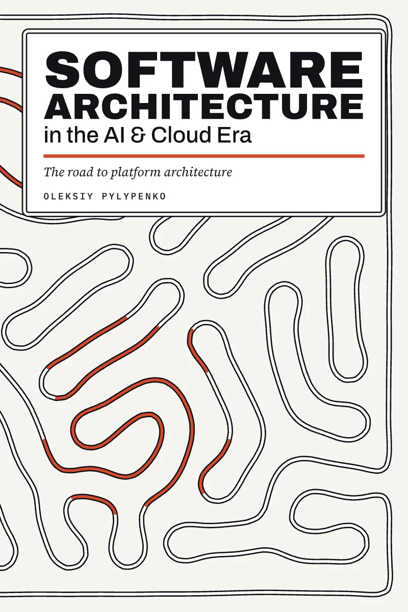
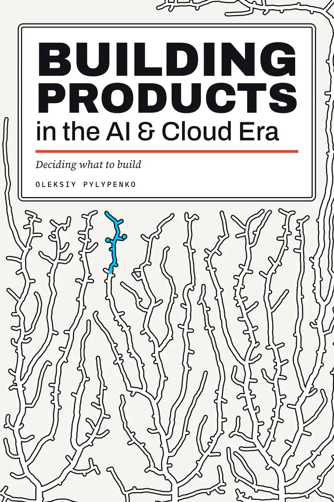
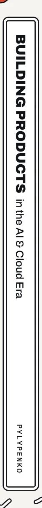
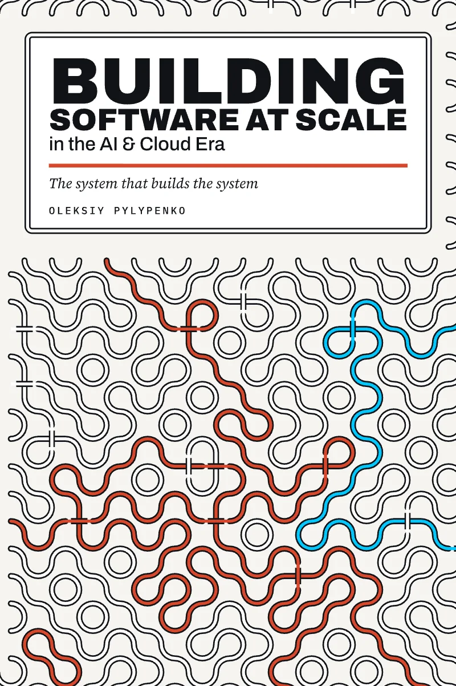
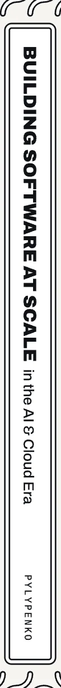
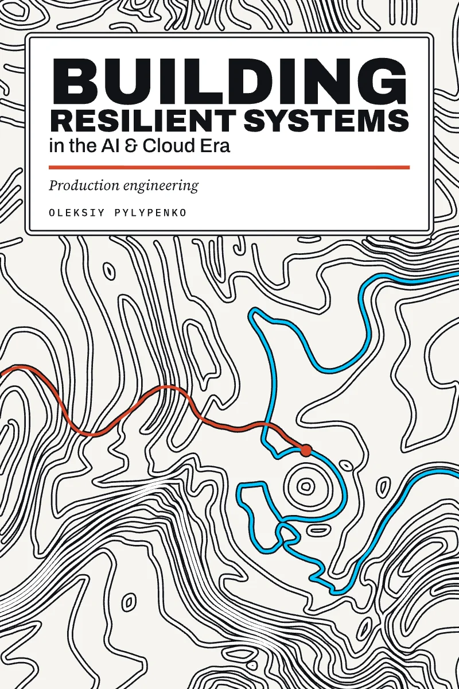
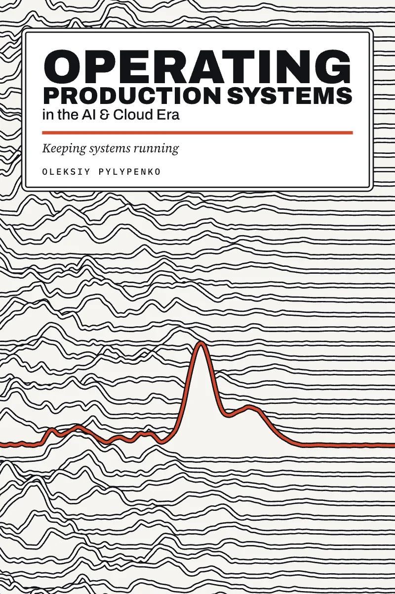
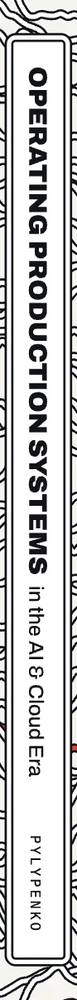

-

Book 1Software Architecture
The road to platform architecture
-


Book 2Building Products
Deciding what to build
-


Book 3Building Software at Scale
The system that builds the system
-

Book 4Building Resilient Systems
Production engineering
-


Book 5Operating Production Systems
Keeping systems running
One company, five questions
Encore sells concert tickets. In the books it grows from a handful of founders to four hundred engineers, survives on-sales of a million fans, builds a resale service and has its worst Friday. Every practice in the series is shown working, or failing, at that one company.